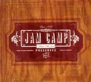

Home Artist links Label link

Jam Camp - Black Hills Jam
| Artist: | Jam Camp |
| Title: | Black Hills Jam |
| Label: | Flying Spot |
| Length(s): | 59 minutes |
| Year(s) of release: | 2004 |
| Month of review: | [01/2005] |
Line up
David Broyles - guitars (stereo left)
Michael "Smitty" Smith - guitars (stereo right)
Steven Munger - sax
Jess White - bass
Joel Veatch - drums
Tracks
| 1) | Black Hills Jam | 15.27
|
| 2) | Wormhole | 4.23
|
| 3) | Westside Highway | 7.03
|
| 4) | Trees | 10.42
|
| 5) | Groove Monkey | 8.39
|
| 6) | Swamp Gas & Moonshine | 15.15
|
| 7) | Dangerous In Deed | 7.50
|
Summary
With the standard line-up except a sax player who replaces the vocalist,
this album is entitled Preserves Vol. 2 (so I guess there is a volume 1 around).
Jam Camp is a name from my past, since one of the first obscure prog releases
I bought as a young man was the Beyond Rock collection of For Arts Sake,
a collection of Seattle bands not playing grunge right when grunge
was very popular. Jam Camp was on it.
The music
Anyway with Jam in both the name and the title, and some mile long tracks
one raises a certain expectation. And it comes true absolutely. The opener
for instance has long winded guitar solo (double ones in fact, as initiated
by bands like Wishbone Ash). Sometimes the sound becomes a bit more floating,
thus psychedelic, but if you think of Wishbone Ash during there less
commercial albums, you get some idea what we have here. However, Jam Camp does
have a sax player too, ande no vocalist. The sound is very American
and the bio drops names like Allman Brothers Band and Dixie Dregs which do
in fact indicate even better the line of music to expect. When we come
past the eleven minute mark, the music gets a bit more intense and hectic.
The sax still plays rather mellow and melodic tone, and there is time
for subtlety too.
After the title track we come to Wormhole, which is quite a bit shorter
(less than a third). This is a groovy tune, which lies well in the
environs of the ToneCenter releases, certainly no less.
Again, the sax plays the tune this time alternated with meandering parts
on the hand of sometimes sax, sometimes guitar. All played in a very funky
fashion.
With Westside Highway we are back in the seventies, with a combination
of rhythm guitar and sax. It continues the meandering, jamming feel of the
album. The melody is not the most important, but it is not disregarded
either, and the music is certainly not aimless.
Well, Trees follows again the same line, with the guitars being a bit
more at fore, and a bit meaner too at times. Their seem to be more
dynamics here, with a moody middle part and at times rather active
playing.
The name Groove Monkey is well chosen. Indeed this is a rather up-beat
groovy tune, and something one may hear in a bar on a friday night.
For me, a track like this lacks adventure. It does contain some fast guitar
licks, and the usual meandering rhythm and melodic guitar, which kind a saves
it towards the end.
Swamp Gas & Moonshine is the second long track, also over fifteen minutes.
It all stays rather laid back in the beginning, with a very Southern feel.
Then the sax sets in for his meandering duty and the pace comes into the
music. In the final part, the music becomes more jumpy.
The closer is Dangerous In Deed, which has a sax way in the back, wailing.
The guitar wails along, and I like this more than the previous. There is more
bite to it, a certain sharpness. A hectic rock track, featuring a strong
bass presence.
Conclusion
If you like the music of the bands I mentioned: Allman Brothers Band,
Wishbone Ash, the Dregs and maybe even if you happen to be into the Tone Center
releases or even psychedelic rock, than this live recording is for you.
Long winded instrumental rock with a definite nod to the seventies. Twin
guitars and sax vie for first place on this one, and the role of the sax
should not be lightly regarded. For myself, it lacks both the blistering
feel of the kind of instrumental rock I enjoy, and it lacks the melodic
approach of symphonic rock.
© Jurriaan Hage